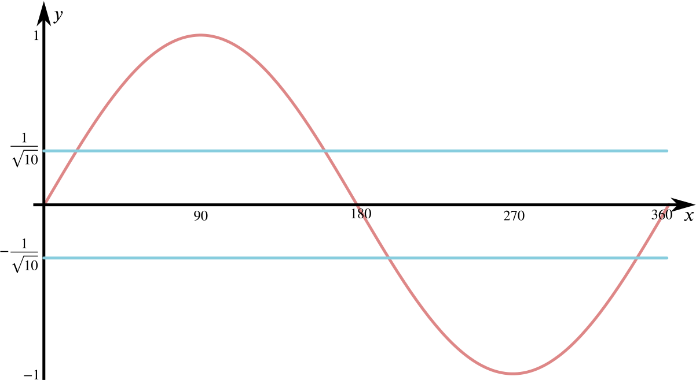

So if sin2θ−cos3θ=0, we have 2sc−c(1−4s2)=0, or c(4s2+2s−1)=0.
Now we know that sin(18∘) is a solution to this equation, and so sin(18∘) is a root of 4x2+2x−1=0, since cos18∘≠0.
Hence find its value as a surd.
We complete the square in order to find the roots of 4x2+2x−1 in surd form. We have
4x2+2x−1=(2x+12)2−54=0,
so that
2x+12=±5⎯⎯√2,
and we have
x=−1±5⎯⎯√4.
Finally, we must choose whether we need a plus or a minus sign to find the root corresponding to sin18∘. We know that sin18∘>0, so we choose the plus sign. So we have that
sin18∘=−1+5⎯⎯√4.
Find all solutions between 0∘ and 360∘ of the equation
4tan2x=cotx.
We play a similar game here to that of the first part of the question. Firstly, we can write
So we have that cosx=0 solves this, which gives us the values x=90∘,270∘ between 0∘ and 360∘. We also have that
sinx=±110⎯⎯⎯⎯√
is a solution, so that x=sin−1(±1/10⎯⎯⎯⎯√) are also solutions. To work out how many solutions between 0∘ and 360∘, consider

We see that sinx=±1/10⎯⎯⎯⎯√ four times between 0∘ and 360∘.
Using a calculator, one finds that sin−1(1/10⎯⎯⎯⎯√)=18.4∘ to one decimal place. From the symmetries of sine, we see that the other angles are then 180∘−18.4∘=161.6∘, 180∘+18.4∘=198.4∘ and 360∘−18.4∘=341.6∘, giving us six solutions in total.